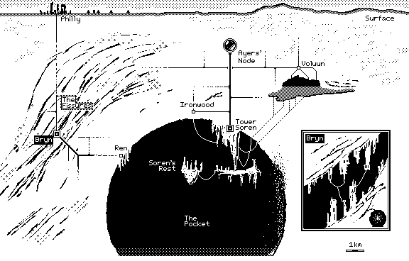
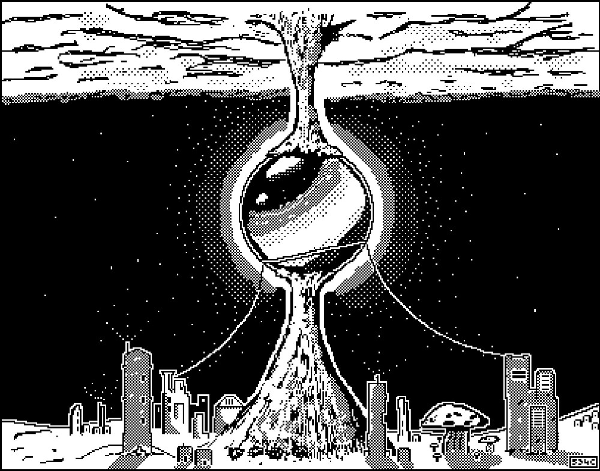
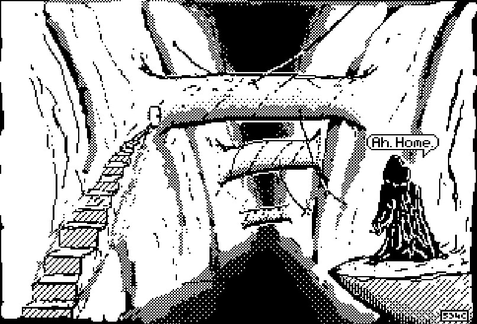
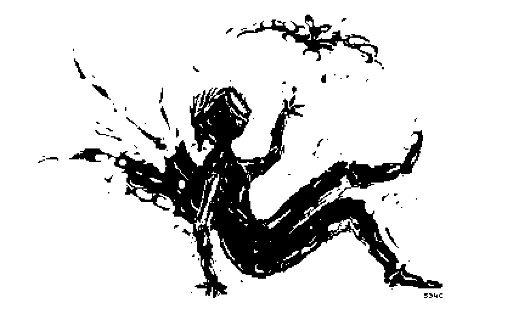
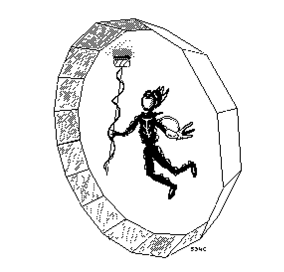

Project-U
In truth, this project is simply a reason for me to draw and write.

For an age humanity has lived in the caverns, pits, and twisting fissures of the Underground. Dozens of generations knew the damp darkness as more than a home. The Dark is safety and a friend, one that envelopes you and your loved ones in an inky blanket of calm serenity. It is adventure and a watchful companion for those venturing into the unknown to uncover a never-explored nook or yawning abyss.
The omnipresent Dark spanned lifetimes. It was witness to the rise, flourishing, and fall of countless families, communities.
But slowly and surely, we forgot to see the Dark as an equal and instead as a threat, something to eradicate. The Dark was a dominating sickness of the Underground. The Dark no longer patiently waited to accompany travelers, it lurked and stalked unsuspecting victims. T then we conquered the Dark. We saw the Dark as something to be driven back. To be harnessed.
And so we invented reasons to.
The Dark is a malevolence and a scheming adversary. There are dangers in the Dark, some natural and sedentary, others not so much. There are those who wield the Dark as a powerful and ever-present weapon—sometimes swift and sharp like an abyssal dagger and other times oozing and patient like pitch. Recently the Dark seems to hide help from those in need, and reveal riches to those already drowning in the wealth of the deep Underground.
Places


People
Mauve Soren

Through flowing sand and bone-dry streams
there lies a labyrinth all covered in green.
Mossy it was and a sight to behold,
stone walls tall as ten houses and obviously old.
What was truly strange is it never stood still
always appearing here and there wherever it will.
Reese was an explorer, an exhibitionist, and exhumer.
And like Mr. Drake, her father, had an excellent humor
when it came to long treks through waterless wastes:
"I haven't eaten this much sand since I was eight!"
She of course knew of the labirynth and the gem at its core:
a ruby, deep red, flawless and big as a boar.
And so she ventured between the green-grey walls
marking her path along every new hall.
Finally she reached a hazy room at its center.
But there she found no hulking red glimmer.
Instead only a gem, tiny and nearly jet black.
Disappointed, she sighed and tossed it into her sack
and to her surprise Reese heard a faint note
raspy and oozy from inside her tote:
*Ahem* "I sense courage is not something you lack..."
"But I think it'd be best if you put me back."

Things
Darksbane — luminous ore with mysterious source of energy. Even small pieces emit a pleasant glow. Too small, and the glow stops. Shattering a Darksbane crystal does not seem to reduce its total luminous output (as long as all resulting pieces are decently large). As a powder, there seems to be no difference between it and ground glass. Darksbane powder, does not seem to have a melting point and cannot be pressed back into a luminous crystal. It does not seem to react with water or any other substance except for Quicksilver. It is sometimes consumed as a homeopathic supplement. Darksbane is mostly found as spherical crystals ranging from the size of a pea to a skudball. A pea-sized Darksbane emits enough light to read by, if you hold it close to the page. A skudball size is enough to light a medium sized room. The largest ever found was Ayers' Node, nearly 400m across. When wrapped with copper wiring, the overall luminosity of a crystal drops, but luminous energy seems to be transferred through the wiring, boosting the luminosity of any Darksbane crystal at the other end. The flow of luminous energy seems to follow the simple rule of large to small.
Tallum — A near-miraculous insulator. Wire coatings. Can be woven into fabric that shields from even the most harsh temperature gradients for extended periods of time.
Pollux — a miracle conductor. Near lossless power transfer.
Pux — atomized Pollux especially when kicked aloft. Follows magnetic field lines and when surrounding comms towers can expose data being transferred wirelessly.